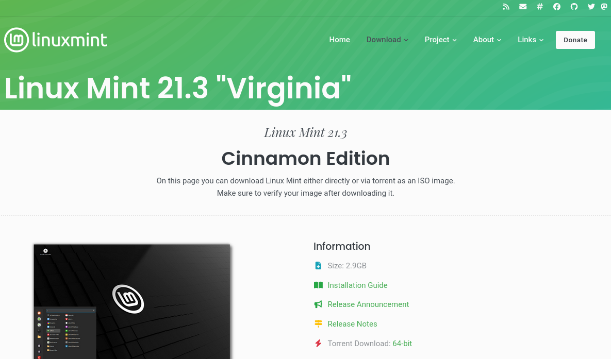
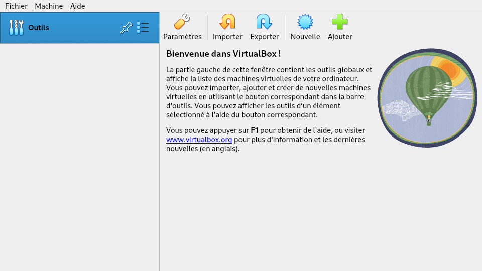
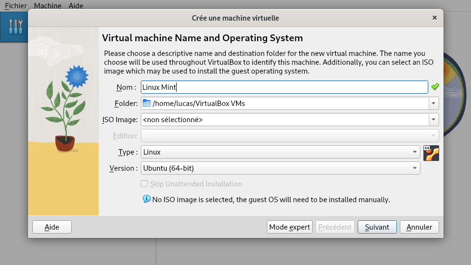
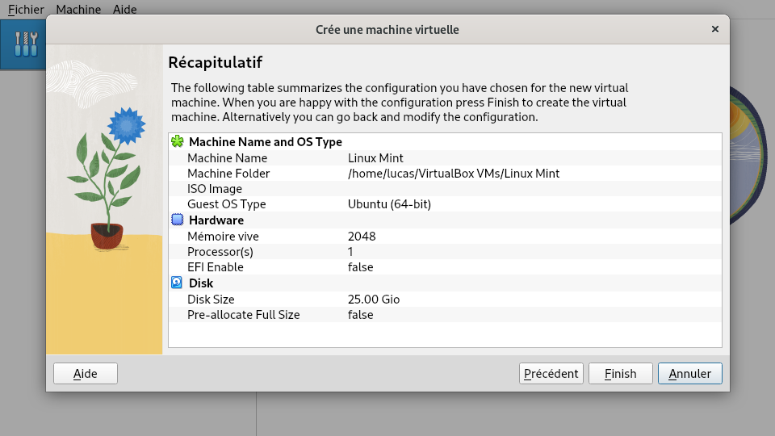
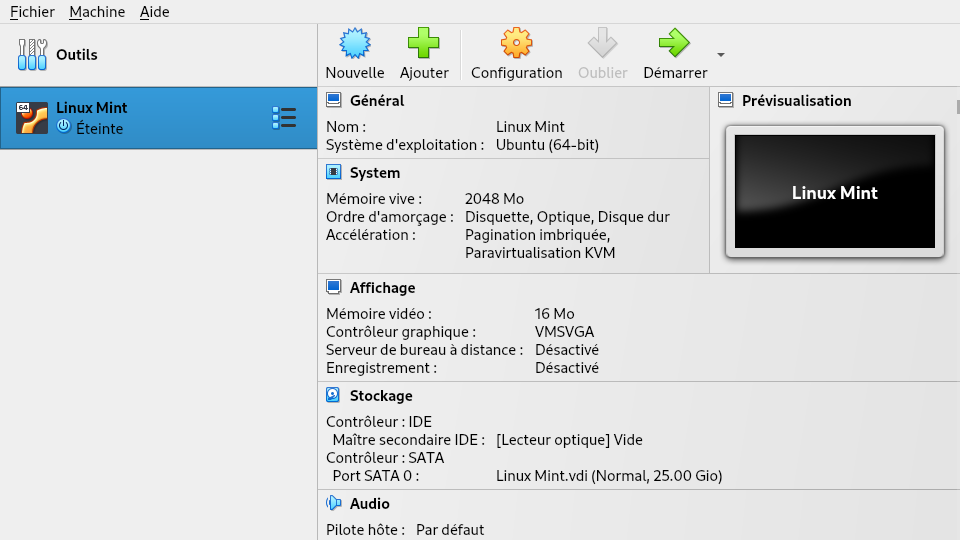
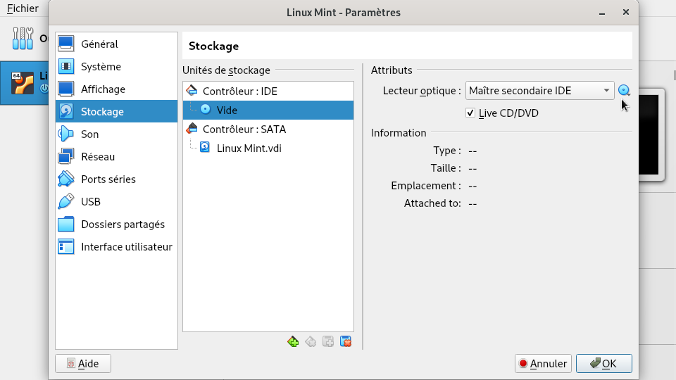
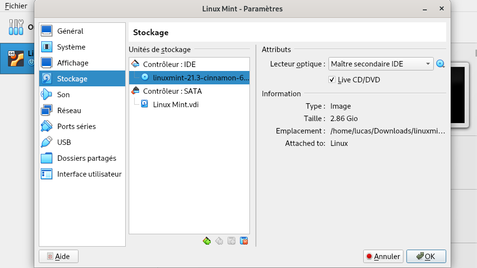
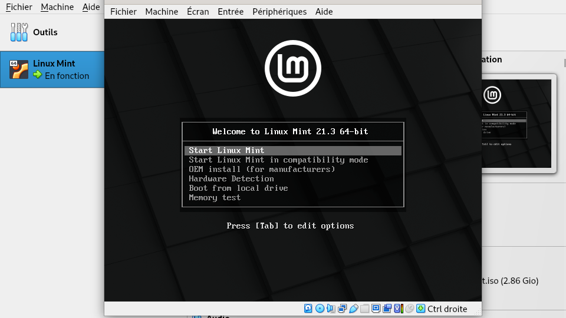

Il existe des centaines de distributions Linux. Avant de se lancer, c’est rassurant de pouvoir en tester quelques-unes. Pour cela, pas besoin d’installer Linux sur son ordinateur, il est possible d’essayer des distributions virtuellement !
Sans rien installer sur son ordinateur
Distrosea est un site web proposant d’essayer facilement différentes distributions Linux. Le site propose toutes les distributions les plus utilisées (Ubuntu, Linux Mint, Debian, Fedora…) et permet de se connecter à distance à un ordinateur sous Linux. L’utilisation est très simple : il suffit de cliquer sur le logo de la distribution. Même pas besoin de créer un compte utilisateur !
En installant une machine virtuelle
Pour tester plus en détail une distribution, il est possible de l’installer sur un ordinateur virtuel à l’intérieur de son propre ordinateur, on parle de machine virtuelle. Il existe des logiciels spécialisés qui permettent de faire cela.
VirtualBox est un logiciel permettant de créer rapidement des machines virtuelles. C’est une application facilement configurable et disponible sur Windows, MacOS et Linux.
Installons Linux sur VirtualBox
En ouvrant pour la première fois le logiciel, vous pouvez commencer par changer la langue d’affichage dans File > Preferences > Language.
La première chose dont nous allons avoir besoin pour créer une machine virtuelle avec Linux dessus, c’est une image ISO.
Avant, l’installation de Linux nécessitait l’utilisation d’un disque CD-ROM. Heureusement, aujourd’hui, nous avons les images ISO ! Ce sont des fichiers qui renferment les mêmes données qu’un CD d’installation de système d’exploitation. Nous n’avons plus besoin de CD, ce qui est quand même pratique, surtout si, comme moi, vous n’avez pas de lecteur CD sur votre ordinateur !
Une image ISO se présente simplement comme un fichier, avec une extension .iso. Chaque système d’exploitation a sa propre image ISO, on peut en général les trouver sur les sites web des distributions Linux.
Pour cet exemple, nous allons utiliser l’image ISO de Linux Mint. Linux Mint est une distribution Linux largement répandue. Elle a l’avantage et la réputation d’être facile à prendre en main par les habitués⋅ées de Windows.
Commençons par nous rendre sur la page de téléchargement des images ISO de Linux Mint.

Dans la section “Download mirrors”, la page contient beaucoup de liens associés à des pays. Il n’y a aucune différence entre ces liens, vous pouvez choisir n’importe lequel, mais les liens indiqués dans votre pays permettront un téléchargement plus rapide. Cliquez sur un des liens et le téléchargement commencera.
Une fois le téléchargement terminé (cela peut prendre un peu de temps, les images ISO sont de gros fichiers) mettez le dans un dossier de votre ordinateur que vous saurez retrouver.
De retour dans VirtualBox, cliquez sur le gros bouton Nouvelle.

Une autre fenêtre s’ouvre pour nous permettre de configurer une nouvelle machine virtuelle. Commencez par entrer le nom de votre machine, pour cet exemple on écrira “Linux Mint” pour que VirtualBox puisse automatiquement définir les bonnes options à paramètrer pour Linux Mint. Vérifiez que les cases Type et Version affichent respectivement “Linux” et “Ubuntu (64-bit)”. Ensuite, cliquez sur Suivant.

Laissez toutes les options par défaut dans les fenêtres suivantes. Cliquez à chaque fois sur Suivant, puis la dernière fois, sur Finish. Ça y est la machine virtuelle est prête, il ne reste plus qu’à installer Linux Mint dessus !

Dans la liste à gauche de l’écran vous devriez voir votre nouvelle machine Linux Mint. Cliquez dessus, puis sur le gros bouton Configuration. Nous allons installer l’image ISO sur la machine virtuelle.

Dans la fenêtre de configuration, cliquez sur Stockage puis sur vide. Vous devriez avoir cette fenêtre :

Au bout de Lecteur optique, cliquez sur le petit disque bleu puis sur Choose a disk file.... Dans l’explorateur de fichiers qui s’ouvre, sélectionnez l’image ISO de Linux Mint que vous aviez téléchargée. Vous devriez maintenant voir les informations de votre image ISO s’afficher. Vérifiez que la case Live CD/DVD est cochée puis fermez la fenêtre de configuration.

Désormais votre machine est prête à fonctionner ! Cliquez sur le gros bouton Démarrer, et Linux Mint va se lancer sur une nouvelle fenêtre.

La version de Linux Mint sur laquelle vous naviguez n’est pas une version complète, c’est une version dite “Live”. Elle vous permet de tester la distribution mais ne l’a pas installée sur votre machine virtuelle.
Pour installer Linux Mint sur votre machine virtuelle de manière durable vous pouvez cliquer sur l’icone Install Linux Mint qui est sur le bureau. Suivez les instructions du gestionnaire d’installation et laissez les options par défaut si vous ne comprenez pas à quoi elles servent (ce qui est tout à fait normal la première fois).
N’ayez pas peur de casser quelque chose, vous êtes sur une machine virtuelle, complètement séparée de votre propre ordinateur ! C’est l’endroit rêvé pour bidouiller !
L’exemple ici utilisait Linux Mint, mais la procédure est exactement la même pour d’autres distributions. Vous pourrez par exemple créer une machine virtuelle pour tester Ubuntu.